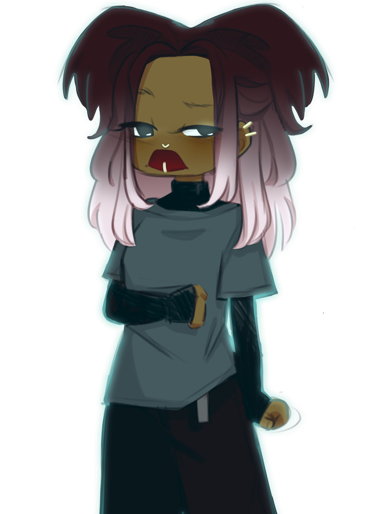
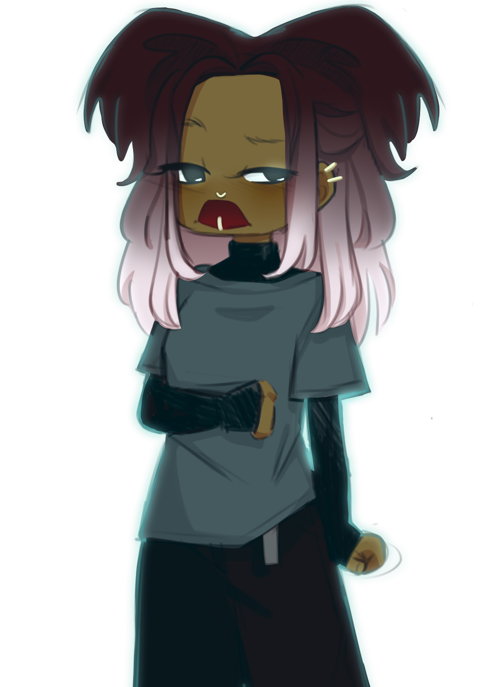

They turned into the center where all the paths split from. The snow started to pick up. "Are you sure you know where you're going?" Deja questioned. "Uh..I think I do,," Neveah dragged out. She didn't sound confident...
 
